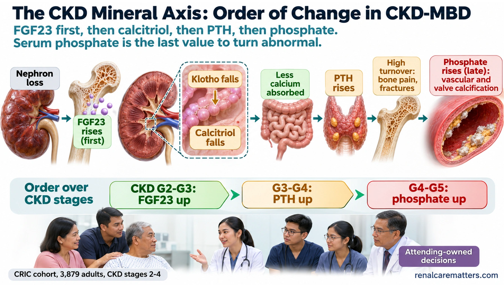
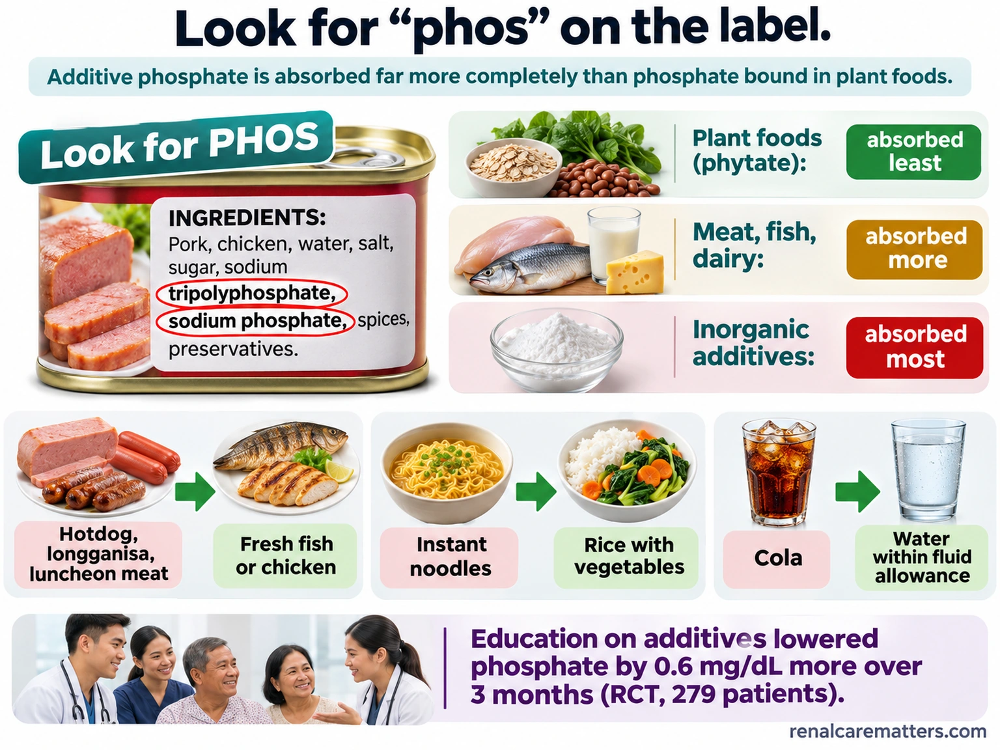

Read the calcium, phosphate, PTH and FGF23 axis as trends, and build a phosphate and protein plan around Filipino food.
PublishedNailathalaGipatikPepalwal:ReferencesMga SanggunianMga TinubdanReng Reperensya:10Audience: Adult and pediatric nephrology fellows · internal medicine and pediatric residents · medical interns on medicine, pediatrics, ICU and dialysis rotations, and residents who work shifts as dialysis physicians on dutyRead timeOras ng pagbasaOras sa pagbasaOras ning pamamasa:
Training track for nephrology fellows, residents and medical interns
Study material for medical interns, residents and fellows. It explains the reasoning behind common decisions; it is not a protocol and gives no drug doses. Doses, rates and order sets come from current guidelines, product labels, your institution’s approved protocols and your supervising physician. Benefit rules change: confirm them on the date of service. Every case is fictional.
Learning objectives
After this module you should be able to
Intern: Record calcium, phosphate, parathyroid hormone (PTH) and alkaline phosphatase results with dates, units and assay, correct calcium for albumin, and take a diet and supplement history that includes processed foods and soft drinks.
Resident: Interpret calcium, phosphate, PTH and alkaline phosphatase as trends using the Kidney Disease: Improving Global Outcomes (KDIGO) 2017 chronic kidney disease–mineral and bone disorder (chronic kidney disease (CKD)-MBD) guideline, and name the modifiable driver behind each abnormal trend.
Fellow: Plan phosphate binders, vitamin D, calcimimetics, parathyroidectomy referral and dietary protein with the KDIGO 2017, Kidney Disease Outcomes Quality Initiative (KDOQI) 2020 nutrition and KDIGO 2024 statements and their grades, and explain where the guidelines disagree.
Pre-testBefore you read, answer the 5 self-assessment questions and note your score. After the module, select New set of questions and compare. The difference is what you learned; the questions you still miss are what to reread.
Start here
The big picture, in plain words
Your role · the monthly laboratory sheet and the plateThe intern lines up the results by date, corrects calcium for albumin, and asks what the patient actually ate this week, from the canned goods to the soft drinks. The resident reads the trend rather than the single value and names what is driving it: food, missed binders, short dialysis, low vitamin D, or rising PTH. The fellow chooses with the attending among binders, vitamin D, calcimimetics and surgery, sets a protein target the patient can live with, and knows which statement in which guideline backs each choice.
In plain wordsPicture a sari-sari store with one narrow back door. Deliveries of phosphate arrive every day from the patient’s meals. The kidney is the back door, the only way out. When the door narrows, the owner hires a guard to push more stock out of each opening and cancels part of tomorrow’s delivery. If that is not enough, the owner calls the landlord, who starts breaking the walls to make room.
The picture has a limit. The store has one guard and one landlord; the body has several hormones that talk to each other, and the walls they break are bone and blood vessels. As nephrons are lost, bone cells release fibroblast growth factor 23 (FGF23). With its kidney co-receptor Klotho, FGF23 makes each remaining nephron excrete more phosphate and suppresses the activation of vitamin D to calcitriol. Less calcitriol means less calcium absorbed from the gut and less restraint on the parathyroid glands, so PTH rises. For years these hormones keep serum phosphate and calcium normal. The price is paid quietly: FGF23 and PTH climb, Klotho falls, bone turnover changes, and calcium and phosphate settle in arteries and heart valves.1
Figure 1 · Key numbers
Start monitoring calcium, phosphate, PTH and alkaline phosphatase (KDIGO 2017)From CKD G3a in adults (1C)
PTH on dialysis (KDIGO 2017)About 2 to 9 times the upper normal limit of the assay (2C)
Calcium-based binders in adults (KDIGO 2017)Restrict the dose (2B)
Dialysate calcium (KDIGO 2017)1.25 to 1.50 mmol/L (2C)
Protein in CKD G3–G5 (KDIGO 2024)0.8 g/kg body weight per day (2C); avoid more than 1.3 g/kg per day (practice point)
Protein in stable CKD 3–5 without diabetes (KDOQI 2020)0.55 to 0.60 g/kg per day under close supervision (1A for kidney failure or death)
Most mineral problems in CKD build slowly over months and are found on a routine laboratory sheet. A few announce themselves: symptomatic hypocalcemia, severe hypercalcemia, or painful skin ulcers of calciphylaxis. Your work is to read the trend early, fix the driver you can see before adding a medicine, avoid loading the patient with calcium, and give diet advice that fits a Filipino kitchen and a Filipino budget.
Opening case · fictional
Case: The itch that keeps him awake
Saturday, 7 a.m., a freestanding hemodialysis unit in Caloocan. Mr. Rodel Santiago, 49, a security guard, has been on hemodialysis for four years. He dialyzes twice a week because the tricycle fare for a third trip is more than his family can spare. He tells you the itch on his back and legs keeps him awake, and his knees and heels ache when he stands at his post.
The intern, Dr. Bea Tolentino, has lined up his results. Over nine months, phosphate rose from 5.8 to 7.1 mg/dL, total calcium from 9.0 to 9.6 mg/dL with a normal albumin, intact PTH from 380 to 920 pg/mL (laboratory upper normal limit 65 pg/mL), and alkaline phosphatase from 110 to 240 U/L. He was prescribed calcium carbonate tablets with meals and takes them “when I remember, usually at night.” His usual meals on duty are instant noodles, hotdogs or canned luncheon meat with rice, and a cola. He asks whether he should stop eating meat altogether.
Before reading on, decide:
What do the nine-month trends tell you, and what is driving them?
What would you change first in his binders, diet and dialysis before adding a new medicine?
If PTH keeps rising, which PTH-lowering options would you discuss with the attending, and when is parathyroidectomy on the table?
Keep your answers in mind. The lesson gives you what you need, and the case review near the end shows one sound response.
Lesson · part 1
The mineral axis: FGF23, Klotho, calcitriol and PTH
In a steady state, a healthy kidney excretes as much phosphate as the gut absorbs, and it fine-tunes how much leaves in the urine. The tuning is hormonal. FGF23 and PTH both tell the proximal tubule to excrete phosphate. Calcitriol, the active form of vitamin D made in the kidney, raises gut absorption of calcium and phosphate and holds PTH down.
In CKD the sequence runs in a predictable order. FGF23 rises first. In 3,879 adults with CKD stages 2 to 4 in the Chronic Renal Insufficiency Cohort (CRIC), median FGF23 was markedly higher than in healthy populations and rose as estimated glomerular filtration rate (eGFR) fell, while mean phosphate and median PTH were still in the normal range. High FGF23 was more common than secondary hyperparathyroidism or hyperphosphatemia at every level of eGFR, and its rise began at a higher eGFR than the rise in PTH.1 This was an observational cross-sectional analysis; it shows the order of change, not that lowering FGF23 helps.
The chain that follows is the one to carry in your head: fewer nephrons, then higher FGF23, then less calcitriol, then less gut calcium and less restraint on the parathyroid glands, then rising PTH, then, late, rising phosphate. High PTH pulls calcium and phosphate out of bone. When the parathyroid glands are pushed long enough, they enlarge and become less responsive, and PTH stays high even when calcium is normal.

Figure 2. The order of change in Chronic kidney disease–mineral and bone disorder (CKD-MBD): FGF23 first, then calcitriol, then PTH, then phosphate. Serum phosphate is the last value to turn abnormal.
Step in the chain
What happens
What you see on the sheet or at the bedside
FGF23 rises, Klotho falls
More phosphate excreted per nephron; calcitriol suppressed
Usually nothing; FGF23 is not a routine test
Calcitriol falls
Less calcium absorbed; parathyroid glands released from restraint
Calcium low-normal; 25-hydroxyvitamin D often low as well
PTH rises
Bone resorption increases; high-turnover bone disease
Rising PTH and alkaline phosphatase; bone pain, fractures
Hyperphosphatemia, itch, vascular and valve calcification
PTH oversuppressed
Low-turnover (adynamic) bone; calcium has nowhere to go
Low PTH, hypercalcemia with calcium loads, fractures
Two wrong turns are possible, and both cause harm. Too much PTH breaks bone down. Too little, often from heavy calcium loads and vitamin D, leaves bone inactive, so a calcium load goes into vessels instead of skeleton. That is why the guideline speaks of trends and ranges, not of driving PTH as low as possible.2
In childrenA child’s skeleton is still growing, so CKD-MBD shows as growth failure, bone deformity and rickets as well as laboratory changes. KDIGO 2017 starts monitoring in children from CKD G2 (2D) and asks that calcium be kept in the age-appropriate normal range (2C).2 Children need more phosphate and calcium for growth than adults, so restriction must be planned with a pediatric renal dietitian.3 See Attending Pediatric Nephrologist, Module 18.
RememberRead CKD-MBD as a chain: FGF23 first, then calcitriol, then PTH, then phosphate. A normal phosphate in CKD G3 does not mean the axis is normal.
Lesson · part 2
The laboratory sheet: what to measure, how often, and how to read it
KDIGO 2017 recommends monitoring serum calcium, phosphate, PTH and alkaline phosphatase activity in adults beginning at CKD G3a (1C).2 The frequency rises as kidney function falls and when results are abnormal or treatment changes. The guideline’s first treatment statement sets the habit for everything that follows: base decisions on serial measurements of phosphate, calcium and PTH considered together, not on one value (not graded).2
KDIGO 2017 statement
Grade
Monitor calcium, phosphate, PTH and alkaline phosphatase from CKD G3a in adults
1C
Consider measuring 25-hydroxyvitamin D and correct deficiency as for the general population
2C
Consider bone mineral density testing to assess fracture risk when results will change treatment
2B
A bone biopsy is reasonable if knowing the type of bone disease will change treatment
Not graded
Base treatment on serial phosphate, calcium and PTH considered together
Not graded
The table follows the guideline summary.2 A bone biopsy is rarely available in the Philippines, which makes the trend in PTH and alkaline phosphatase your main window on bone turnover.
The intern’s part: getting the numbers right
Correct total calcium for a low albumin before anyone acts on it, and say that you did. Write the PTH assay’s upper normal limit beside every PTH value, because PTH assays differ and the KDIGO dialysis range is expressed as a multiple of that limit. Note when the sample was taken in relation to dialysis; phosphate drawn right after a session is not comparable with a pre-dialysis value.
Albumin-corrected calcium (arithmetic illustration, not a target). Corrected calcium (mg/dL) = measured calcium + 0.8 × (4.0 − albumin in g/dL). Measured calcium 8.2 mg/dL with albumin 2.5 g/dL: 8.2 + 0.8 × 1.5 = 9.4 mg/dL. Where your laboratory offers ionized calcium, it is more reliable in very sick or very low-albumin patients.
The resident’s part: reading patterns
Trend over months
Most likely driver
First question to ask
Phosphate rising, PTH rising
Phosphate load exceeds removal; binder not taken with meals
What did you eat, and when do you take the tablets?
PTH rising, phosphate and calcium normal (CKD G3–G4)
Is vitamin D low? Has protein or processed food intake risen?
Calcium rising
Calcium binder, vitamin D analog, high dialysate calcium, immobility
What calcium-containing tablets and supplements is the patient taking?
PTH very low with high calcium
Oversuppression, adynamic bone
Can calcium and vitamin D loads be reduced?
Alkaline phosphatase rising with PTH
High bone turnover
Is PTH-lowering therapy needed?
In the Philippines a PTH costs far more than an alkaline phosphatase, and many patients pay out of pocket between dialysis packages. A rising alkaline phosphatase with normal liver tests is a cheap clue that bone turnover is climbing and that a PTH is worth paying for.
Stop and callStop and call the attending nephrologist when
a patient has tingling, muscle spasm, tetany or seizures with a low calcium;
corrected calcium is high with confusion, vomiting or new arrhythmia;
a dialysis patient has new painful, purplish skin lesions or ulcers on the thighs or abdomen, which may be calciphylaxis;
calcium falls sharply after parathyroid surgery.
Do this per unit protocol, but always ask the attending nephrologist for guidance.
RememberNever treat a single phosphate or PTH value. Line up at least three results with dates, correct the calcium, write the assay’s upper limit beside the PTH, and then ask what changed.
Lesson · part 3
Treatment: lower phosphate, spare calcium, and keep PTH in range
Treatment follows the chain. Reduce the phosphate load, avoid adding calcium, correct vitamin D deficiency, and keep PTH from climbing out of range. Phosphate, calcium and PTH are surrogate markers. No trial has shown that hitting a phosphate value prolongs life, and the guideline grades reflect that.
KDIGO 2017 treatment statement
Grade
Lower elevated phosphate toward the normal range
2C
Avoid hypercalcemia in adults
2C
Use dialysate calcium of 1.25 to 1.50 mmol/L
2C
Start phosphate-lowering treatment for persistently or progressively high phosphate, not pre-emptively
Not graded
Restrict the dose of calcium-based phosphate binders in adults
2B
Avoid long-term aluminum-containing binders and aluminum contamination of dialysate
1C
Limit dietary phosphate, alone or with other treatments
2D
Increase dialytic phosphate removal for persistent hyperphosphatemia
2C
Not on dialysis: when PTH is rising or persistently high, evaluate phosphate, calcium, phosphate intake and vitamin D deficiency
2C
Not on dialysis: do not routinely use calcitriol or vitamin D analogs in CKD G3a–G5
2C
Reserve calcitriol or analogs for CKD G4–G5 with severe and progressive hyperparathyroidism
Not graded
Dialysis: keep intact PTH at about 2 to 9 times the assay’s upper normal limit
2C
Dialysis, PTH-lowering therapy: calcimimetics, calcitriol or vitamin D analogs, or a combination
2B
Severe hyperparathyroidism not responding to medical therapy: consider parathyroidectomy
2B
Every statement and grade in this table is from the KDIGO 2017 summary.2 Notice that most are weak suggestions on low-quality evidence, and several are ungraded. The strongest statements are about what to avoid: aluminum and excess calcium.
Why spare calcium
A calcium binder lowers phosphate, but part of the calcium is absorbed. A patient with adynamic bone cannot store it, so it may go to vessel walls. Jamal and colleagues pooled 11 randomized trials with 4,622 patients and found that those assigned to non-calcium-based binders had 22% lower all-cause mortality than those on calcium-based binders (risk ratio 0.78, 95% confidence interval 0.61 to 0.98).4 The trials were mostly small, open label and heterogeneous, and the meta-analysis does not give a reliable absolute difference for an individual patient. KDIGO turned this into a suggestion to restrict calcium binder doses (2B), not a ban.2
Calcimimetics: a strong surrogate effect, a neutral outcome trial
Calcimimetics make the parathyroid calcium-sensing receptor more sensitive, so PTH falls. EVOLVE randomized 3,883 hemodialysis patients with moderate to severe secondary hyperparathyroidism to cinacalcet or placebo on top of usual care. In the unadjusted intention-to-treat analysis, the composite of death, myocardial infarction, admission for unstable angina, heart failure or a peripheral vascular event occurred in 48.2% on cinacalcet and 49.2% on placebo (heart rate (HR) 0.93, 95% confidence interval 0.85 to 1.02). Hypocalcemia and gastrointestinal effects were more frequent with cinacalcet.5 The drug lowered PTH reliably; it did not significantly reduce hard events in the main analysis. That is the lesson of every CKD-MBD trial so far: a better surrogate does not guarantee a better patient outcome.
The Philippine reality
Calcium carbonate is cheap and widely sold. Non-calcium binders, calcimimetics and active vitamin D analogs cost far more, and most families pay out of pocket for take-home medicines even when the dialysis session itself is covered. Parathyroidectomy needs an experienced surgeon and a hospital that can manage the severe hypocalcemia that can follow. A plan that the family cannot afford is not a plan. Ask what the patient can buy every month, then choose the option with the best evidence inside that budget, and document the conversation.
Dialysis time matters too. Phosphate removal depends on time on dialysis more than on almost anything else in the prescription. A patient who dialyzes twice a week because of transport costs will struggle to control phosphate with tablets alone. KDIGO suggests increasing dialytic removal for persistent hyperphosphatemia (2C).2 Philippine Health Insurance Corporation (PhilHealth) covers up to 156 sessions a year for patients registered in the PhilHealth Dialysis Database (PDD), enough for three sessions a week, but the fare and the lost wages are not covered.6 Help the family look for transport support from the local government or the Malasakit Center before accepting twice-weekly dialysis as fixed.
Figure 3 · Monthly CKD-MBD review
Line up the trendPhosphate, corrected calcium, PTH with its assay limit, alkaline phosphatase, over at least three results.
Check intakeProcessed foods, soft drinks, protein sources, and calcium or vitamin D supplements bought without prescription.
Check the binderIs it taken with meals, not at bedtime? Is it affordable every month?
Check dialysisSessions per week, hours per session, missed sessions.
Check vitamin D25-hydroxyvitamin D if not recently measured.
Then consider medicinesBinder type, calcitriol or analogs, calcimimetics, within the KDIGO statements and the family’s budget.
ReferSevere, rising PTH despite medical therapy: discuss parathyroidectomy with the attending nephrologist.
RememberFix the driver before adding a drug: a binder taken with meals, fewer additive-laden foods, enough dialysis time and corrected vitamin D come before a calcimimetic.
Lesson · part 4
Nutrition: phosphate sources, protein targets and the Filipino plate
Not all phosphate is equal. Phosphate in plant foods such as beans and grains is partly bound in phytate, which humans digest poorly, so less of it is absorbed. Phosphate in meat and dairy is absorbed more readily. Inorganic phosphate added to processed foods as a preservative, leavening or flavor enhancer is absorbed most completely. KDIGO 2017 suggests limiting dietary phosphate (2D) and adds, without a grade, that the source of phosphate should be considered.2
Teaching patients about additives works, modestly. In a cluster randomized trial at 14 hemodialysis facilities, 279 patients with high phosphate were assigned to education on avoiding foods with phosphorus additives or to usual care. After three months the fall in serum phosphate was 0.6 mg/dL larger with education (95% confidence interval 0.1 to 1.0 mg/dL).7 Serum phosphate is a surrogate, and the trial was short, but the intervention cost almost nothing.

Figure 4. Look for “phos” on the label. Additive phosphate is absorbed far more completely than phosphate bound in plant foods.
Fresh fish, chicken or pork cooked at home, in the portion the dietitian sets
Instant noodles and flavor packets
Additives and very high sodium
Rice or fresh noodles with vegetables; half the seasoning
Cola soft drinks
Phosphoric acid
Water, within the fluid allowance
Processed cheese, powdered milk drinks
Dairy phosphate plus additives
Smaller portions, as the dietitian advises
Bread and baked goods with leavening
Phosphate-containing leavening agents
Read the label; choose products without “phosph” in the ingredient list
Teach one reading skill: look for the letters “phos” in the ingredient list, as in sodium phosphate, sodium tripolyphosphate or phosphoric acid. Many local labels list ingredients in English even when the rest of the pack is in Filipino.
Protein: two guidelines, one direction, different depths
Protein drives phosphate intake, acid load and, through glomerular hyperfiltration, perhaps kidney decline. Protein is also what keeps muscles and immunity intact, and protein-energy wasting is common in advanced CKD. The guidelines agree on avoiding high intake and disagree on how low to go.
Population
Statement
Grade
Adults with CKD G3–G5 (KDIGO 2024)
Maintain protein intake of 0.8 g/kg body weight per day
2C
Adults with CKD at risk of progression (KDIGO 2024)
Avoid high protein intake above 1.3 g/kg per day
Practice point
Older adults with frailty or sarcopenia (KDIGO 2024)
Consider higher protein and calorie targets
Practice point
Metabolically stable CKD 3–5 without diabetes (KDOQI 2020)
0.55 to 0.60 g/kg per day, or 0.28 to 0.43 g/kg per day with ketoanalogues, under close clinical supervision
1A to reduce kidney failure or death; 2C for quality of life
Metabolically stable CKD 3–5 with diabetes (KDOQI 2020)
0.6 to 0.8 g/kg per day
Opinion
Metabolically stable patients on dialysis (KDOQI 2020)
1.0 to 1.2 g/kg per day
1C for hemodialysis without diabetes; opinion otherwise
The KDIGO statements come from the 2024 CKD guideline and the KDOQI statements from the 2020 nutrition guideline.8,9 Why the difference? KDOQI attaches its low targets to a condition: a metabolically stable patient under close supervision, ideally by a renal dietitian. KDIGO writes for a global audience in which many patients have no dietitian, and it sets a target close to the general population’s recommended intake while warning against excess. The two are compatible if you read them as steps. Move a patient eating 1.5 g/kg toward 0.8 first. Go lower only for a stable, well-nourished patient who wants to, with dietitian support and monitoring of weight, albumin and muscle.
Ketoanalogues: what one trial showed
Garneata and colleagues randomized nondiabetic adults with stable eGFR below 30 mL/min/1.73 m², proteinuria below 1 g/g and good nutrition, after a run-in on a low-protein diet, to a vegetarian very low-protein diet with ketoanalogues or to continued conventional low-protein diet for 15 months. The adjusted number needed to treat (NNT) to avoid the composite of starting kidney replacement therapy or a fall in eGFR of more than 50% was 4.4 in the intention-to-treat analysis. Nutritional measures did not worsen. Only 14% of screened patients were randomized.10 The result is promising for a highly selected, motivated group in one country; it is not evidence for an unselected clinic population.
In the Philippines, rice supplies a large share of protein in many diets, and fish, chicken and pork are bought daily in small amounts. Ketoanalogues are an out-of-pocket cost. Renal dietitians are few outside large cities. Use the Renal Dietitian track and the site’s nutrition calculators, and plan with the family who buys and cooks the food. Answer the patient who asks whether to stop meat altogether with a clear no: on dialysis he needs more protein, not less.
RememberProtein advice depends on the stage. Not on dialysis: steer away from high intake, toward 0.8 g/kg, and lower only with supervision. On dialysis: 1.0 to 1.2 g/kg, with phosphate managed by food choice, binders and dialysis time, not by starving the patient.
On the floor
Real situations: problems and solutions
These are fictional but typical. For each one, cover the answer, decide what you would do, then compare. Where a step depends on local rules, your unit’s procedure and your supervisor’s direction come first.
The binder taken at bedtime
What you see
A 55-year-old woman on hemodialysis in Valenzuela has phosphate of 7.8 mg/dL for three months. She takes her calcium carbonate with her evening medicines, two hours after dinner.
What is likely going on
The binder is taken when there is no food phosphate in the gut to bind.
What to do
Teach her to take it with the meals the prescription names, and check that she can afford it every month before changing drugs.
Why it matters
A binder taken away from food mostly adds calcium and removes little phosphate.
The PTH of 20 in the patient on everything
What you see
A 68-year-old man on hemodialysis in Iloilo has PTH 20 pg/mL (upper limit 65), calcium 10.4 mg/dL, and takes a calcium binder, calcitriol and a vitamin D supplement from the pharmacy.
What is likely going on
Oversuppressed PTH with a calcium load: risk of adynamic bone and vascular calcification.
What to do
Report to the attending nephrologist; review every calcium and vitamin D source, including over-the-counter products, and adjust per the attending’s plan.
Why it matters
KDIGO sets a dialysis PTH range of about 2 to 9 times the upper limit (2C) and suggests avoiding hypercalcemia (2C).
The CKD G3b patient with a normal phosphate
What you see
A 50-year-old teacher in Davao with CKD G3b and diabetes has normal calcium and phosphate. A colleague says no mineral tests are needed until dialysis.
What is likely going on
The mineral axis is already changing; FGF23 and PTH rise before phosphate.
What to do
Arrange baseline calcium, phosphate, PTH and alkaline phosphatase, and 25-hydroxyvitamin D, and repeat them on the schedule your attending uses.
Why it matters
KDIGO recommends monitoring from CKD G3a (1C).
The family that stopped all meat
What you see
A 44-year-old man newly started on hemodialysis in Naga has lost 4 kg in two months. His wife stopped cooking fish and chicken “to protect his bones.”
What is likely going on
Protein-energy wasting risk from a well-meant but wrong restriction.
What to do
Explain that on dialysis he needs about 1.0 to 1.2 g/kg of protein a day, refer to the dietitian, and target processed foods and soft drinks instead of fresh protein.
Why it matters
KDOQI 2020 sets dialysis protein at 1.0 to 1.2 g/kg per day; starving the patient of protein worsens survival risk without fixing phosphate.
Field notes
Write the PTH assay’s upper normal limit next to every PTH value in your notes.
Ask “What did you eat yesterday, meal by meal?” instead of “Are you following your diet?”
Teach patients to look for “phos” on ingredient lists; bring a real label from the hospital canteen to show them.
Ask about calcium and vitamin D supplements bought without prescription at every review.
Before you add an expensive drug, ask how many sessions a week the patient actually dialyzes and why.
Case review
Back to the case: The itch that keeps him awake
Reading the trend. Over nine months his phosphate, PTH and alkaline phosphatase have all risen together, and PTH is now about 14 times the assay’s upper limit, well above the KDIGO dialysis range of about 2 to 9 times (2C). Calcium is high-normal. This is progressive secondary hyperparathyroidism with high bone turnover, which fits his bone pain, and the phosphate load fits his itch. The drivers are visible: binder taken at night instead of with meals, processed meats, instant noodles and cola every shift, and only two dialysis sessions a week.
What to change first. Move the calcium carbonate to mealtimes, where it binds food phosphate, and ask whether the family can afford it every month. With the dietitian, swap the hotdogs, luncheon meat and noodles for fresh fish or chicken, and replace the cola with water within his fluid allowance; show him how to look for “phos” on labels. Tell him clearly not to stop eating protein; on dialysis he needs about 1.0 to 1.2 g/kg per day. Work with the social worker on transport help so he can return to three sessions a week, which PhilHealth covers if he is registered in the PDD. Check 25-hydroxyvitamin D. Because his calcium is already high-normal, avoid adding more calcium load.
If PTH keeps rising. KDIGO suggests calcimimetics, calcitriol or vitamin D analogs, or a combination, for dialysis patients who need PTH-lowering therapy (2B). With his calcium at 9.6 mg/dL, a calcimimetic or a lower-calcium strategy is preferable to piling on calcitriol, and a non-calcium binder would help if he can afford it. Explain honestly that EVOLVE showed reliable PTH lowering without a significant fall in cardiovascular events in its main analysis. If PTH stays severely high despite medical therapy, KDIGO suggests considering parathyroidectomy (2B); discuss referral with the attending nephrologist and plan for postoperative calcium monitoring.
Interactive case · fictional
Interactive case: The calcium nobody corrected
Work through a shift one decision at a time. The panel at the top changes with what you choose. After each choice you see why it is, or is not, the best move; after a weaker one you can try again or carry on and see where it leads. Your first choice at each step is scored. The score stays on this device and nothing is sent anywhere. In real practice, your unit’s protocol and the people responsible for each decision come first.
Skills lab · with your preceptor
Skills checklist: CKD-MBD laboratory review and diet counseling
Complete with a preceptor on two patients with CKD G4–G5 or on dialysis. Sign-off is local. Your preceptor rates each step as satisfactory, needs practice, or not observed. Steps marked Critical must all be satisfactory before sign-off. This checklist supports supervised learning; your unit’s own procedure and competency form are the authority. A printable version of every checklist is on the trainer page.
Lines up at least three dated results of phosphate, corrected calcium, PTH (with assay upper limit) and alkaline phosphatase.
Names the most likely driver of each abnormal trend and the question that tests it.
States the KDIGO 2017 PTH range on dialysis and the statement on calcium-based binders, with grades.
Takes a diet history that identifies processed foods, soft drinks and supplements, and teaches the patient to find “phos” on a label.
Sets a protein target appropriate to the stage, naming the KDIGO 2024 or KDOQI 2020 source and grade.
Placement activity. Hemodialysis unit, CKD clinic or renal ward
Self-assessment
Check your understanding
Each visit draws 5 questions at random from this module’s 5-question bank. Choose the single best answer for each, then select Check answers; an explanation appears under the best answer. Select New set of questions for a different mix. A good target is 4 of 5 on two different sets. Nothing you select is sent anywhere; scoring happens in your browser.
Isakova, T., Wahl, P., Vargas, G. S., Gutiérrez, O. M., Scialla, J., Xie, H., Appleby, D., Nessel, L., Bellovich, K., Chen, J., Hamm, L., Gadegbeku, C., Horwitz, E., Townsend, R. R., Anderson, C. A. M., Lash, J. P., Hsu, C.-Y., Leonard, M. B., & Wolf, M. (2011). Fibroblast growth factor 23 is elevated before parathyroid hormone and phosphate in chronic kidney disease. Kidney International, 79(12), 1370–1378. https://doi.org/10.1038/ki.2011.47
Kidney Disease: Improving Global Outcomes (KDIGO) CKD-MBD Update Work Group. (2017). KDIGO 2017 clinical practice guideline update for the diagnosis, evaluation, prevention, and treatment of chronic kidney disease–mineral and bone disorder (CKD-MBD). Kidney International Supplements, 7(1), 1–59. https://doi.org/10.1016/j.kisu.2017.04.001
McAlister, L., Pugh, P., Greenbaum, L., Haffner, D., Rees, L., Anderson, C., Desloovere, A., Nelms, C., Oosterveld, M., Paglialonga, F., Polderman, N., Qizalbash, L., Renken-Terhaerdt, J., Tuokkola, J., Warady, B., Walle, J. V., Shaw, V., & Shroff, R. (2020). The dietary management of calcium and phosphate in children with CKD stages 2–5 and on dialysis: Clinical practice recommendation from the Pediatric Renal Nutrition Taskforce. Pediatric Nephrology, 35(3), 501–518. https://doi.org/10.1007/s00467-019-04370-z
Jamal, S. A., Vandermeer, B., Raggi, P., Mendelssohn, D. C., Chatterley, T., Dorgan, M., Lok, C. E., Fitchett, D., & Tsuyuki, R. T. (2013). Effect of calcium-based versus non-calcium-based phosphate binders on mortality in patients with chronic kidney disease: An updated systematic review and meta-analysis. The Lancet, 382(9900), 1268–1277. https://doi.org/10.1016/S0140-6736(13)60897-1
EVOLVE Trial Investigators, Chertow, G. M., Block, G. A., Correa-Rotter, R., Drüeke, T. B., Floege, J., Goodman, W. G., Herzog, C. A., Kubo, Y., London, G. M., Mahaffey, K. W., Mix, T. C. H., Moe, S. M., Trotman, M.-L., Wheeler, D. C., & Parfrey, P. S. (2012). Effect of cinacalcet on cardiovascular disease in patients undergoing dialysis. The New England Journal of Medicine, 367(26), 2482–2494. https://doi.org/10.1056/NEJMoa1205624
Sullivan, C., Sayre, S. S., Leon, J. B., Machekano, R., Love, T. E., Porter, D., Marbury, M., & Sehgal, A. R. (2009). Effect of food additives on hyperphosphatemia among patients with end-stage renal disease: A randomized controlled trial. JAMA, 301(6), 629–635. https://doi.org/10.1001/jama.2009.96
Kidney Disease: Improving Global Outcomes (KDIGO) CKD Work Group. (2024). KDIGO 2024 clinical practice guideline for the evaluation and management of chronic kidney disease. Kidney International, 105(4S), S117–S314. https://doi.org/10.1016/j.kint.2023.10.018
Ikizler, T. A., Burrowes, J. D., Byham-Gray, L. D., Campbell, K. L., Carrero, J.-J., Chan, W., Fouque, D., Friedman, A. N., Ghaddar, S., Goldstein-Fuchs, D. J., Kaysen, G. A., Kopple, J. D., Teta, D., Yee-Moon Wang, A., & Cuppari, L. (2020). KDOQI clinical practice guideline for nutrition in CKD: 2020 update. American Journal of Kidney Diseases, 76(3 Suppl 1), S1–S107. https://doi.org/10.1053/j.ajkd.2020.05.006
Garneata, L., Stancu, A., Dragomir, D., Stefan, G., & Mircescu, G. (2016). Ketoanalogue-supplemented vegetarian very low-protein diet and CKD progression. Journal of the American Society of Nephrology, 27(7), 2164–2176. https://doi.org/10.1681/ASN.2015040369
Educational self-study for physicians in training. Clinical tasks need your institution’s authorization and supervision. Completing this track is an Academy learning record only. It does not confer licensure, specialist status, PSN or PNSP membership or board eligibility, procedural privileges, CPD units, or completion of an institutional training program, and it does not replace current guidelines, regulations, your institution’s protocols and formulary, or your supervisor.